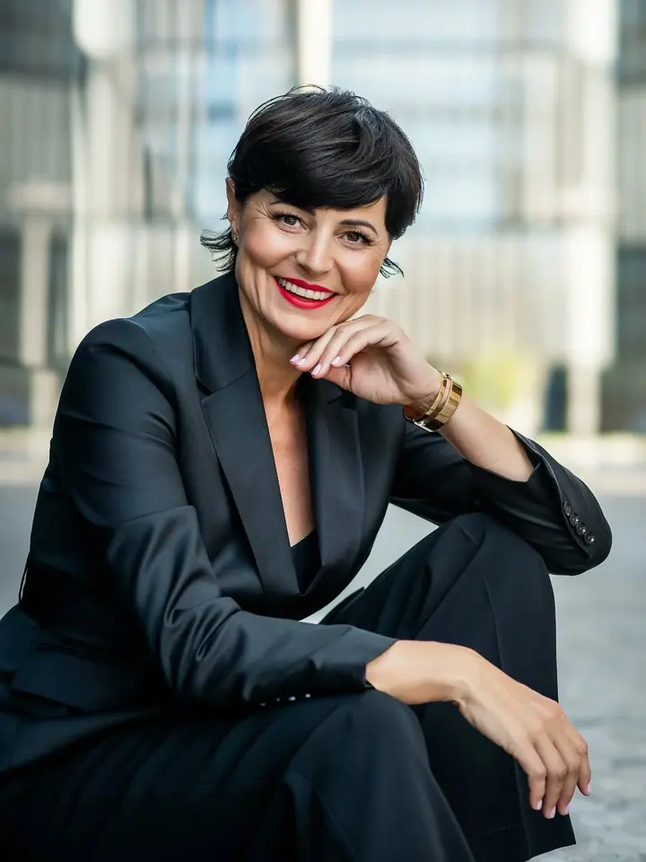
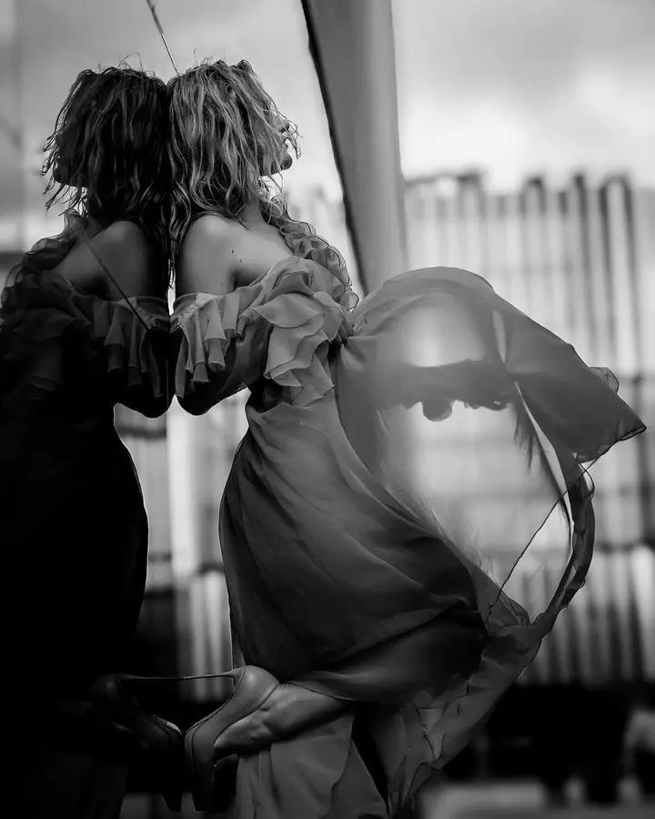

Portrétní focení
Portréty v ateliéru, v interiéru nebo venku v Praze. Společně vybereme místo, styl i outfit podle toho, jak se chcete na fotkách vidět.

Portrétní fotografka
Jmenuji se Lenka Seničová a v Praze fotím portréty, business fotky i ženské boudoir focení. Profesionálně fotím od roku 2006 a pořád platí, že dobrou fotku dělají hlavně emoce.
Zeptat se na termín
Portréty v ateliéru, v interiéru nebo venku v Praze. Společně vybereme místo, styl i outfit podle toho, jak se chcete na fotkách vidět.
Profesionální fotky pro web, sociální sítě nebo vaši značku. Fotíme v ateliéru i v moderních městských lokacích.
Profesionálně fotím od roku 2006 a boudoir a akty od roku 2010, tedy zhruba od doby, kdy se tenhle styl dostal do Česka. Fotím portréty, business a brandové fotky, rodiny, těhotenské focení, miminka i svatby.
Ke každému přistupuji individuálně. Nejdřív si řekneme, jak si focení představujete, pak spolu vybereme ateliér nebo lokaci, outfity a když chcete, domluvím i vizážistku. Na focení se nemusíte nijak strojit ani umět pózovat, záběry s vámi průběžně konzultuji.
Odvedu vám kvalitně retušované fotografie a obvykle jich je víc, než je běžné. Pořádám také fotografické workshopy a tematická focení v Praze a okolí, třeba na vyhlídkách nad městem nebo u řeky v podvečerním světle.
Řekneme si, kde a kdy chcete fotit a jaké máte představy. Zajistím ateliér, termín a případně vizážistku, nebo vybereme lokaci venku.
Doladíme oblečení tak, aby sedělo k prostředí, kde budeme fotit. Vezměte si raději víc věcí než méně, na místě vybereme.
Focení neprobíhá strojeně, nemusíte se bát pózování. Záběry s vámi průběžně konzultuji, takže víte, jak budou fotky vypadat.
Vybrané fotky pečlivě upravím a dostanete je v profesionální kvalitě. Počet fotek bývá vyšší, než je obvyklé.
V Praze v ateliérech, v interiérech i venku, třeba v lese, na louce, na vyhlídce nebo ve městě. Novorozence ráda fotím u vás doma.
Čím víc outfitů, tím lépe. U boudoir focení doporučuji několik setů prádla, body nebo cardigan, podpatky a doplňky jako šperky nebo punčochy.
Ano, spolupracuji s vizážistkou, která je zvyklá pracovat pro focení. Vizáž pak ladí s outfitem i se stylem fotek.
Ano, nabízím poukaz na focení. Je to hezký dárek pro partnera, kamarádku nebo celou rodinu.